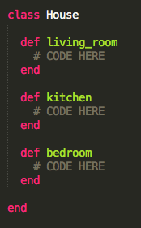

Classes are used to

Instance Methods: are methods defined within a class and are used only within the class. Also, they can be used by any instance of the class, not only by one object.
Instance Variables: are variables defined within a class and are used only within the class.